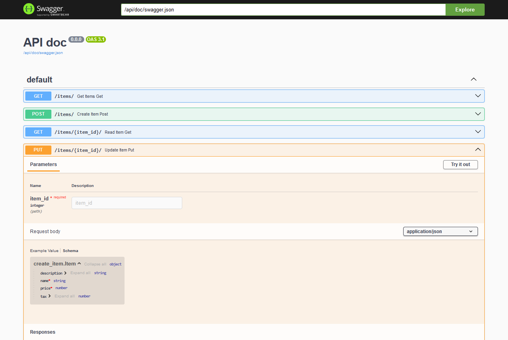
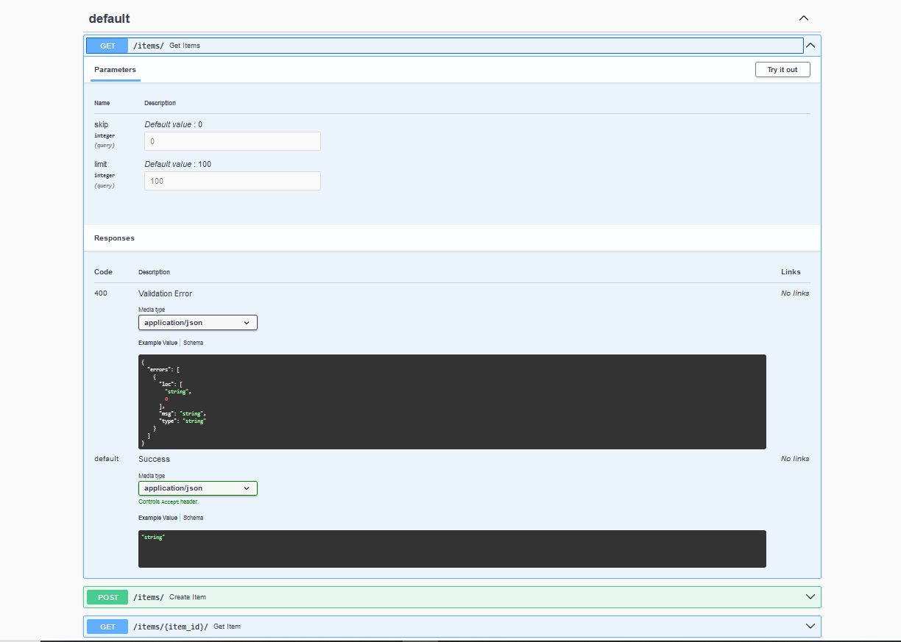

OpenApi
This library automatically generates an OpenAPI schema based on the type annotations defined in the application's endpoints.
In the examples, we will use the swagger-ui-py library to visualize the documentation generated by
flask_typed_routes.
The generated schema is fully customizable to meet the specific needs of your application.
Additionally, the library offers the typed_route decorator, which enables fine-grained control over the various fields
supported by OpenAPI to describe an operation. Detailed instructions on its usage can be found in the relevant sections
of this documentation.
Furthermore, the FlaskTypedRoutes class accepts keyword arguments (kwargs) corresponding to different OpenAPI
configuration fields. These can be used to fully customize the application's schema and tailor it to specific
requirements.
Note
Can be accessed through the openapi_schema attribute of the FlaskTypedRoutes instance.
Basic Usage
Tip
Ensure that the swagger-ui-py library is installed to visualize the OpenApi schema.
pip install swagger-ui-py # ignore if already installed
import flask.views
import pydantic
import swagger_ui
import flask_typed_routes as ftr
app = flask.Flask(__name__)
app_ftr = ftr.FlaskTypedRoutes(app)
swagger_ui.api_doc(app, config=app_ftr.openapi_schema, url_prefix='/api/doc')
class Item(pydantic.BaseModel):
name: str
description: str = None
price: float
tax: float = None
@app.get('/items/')
def get_items(skip: int = 0, limit: int = 100):
return flask.jsonify({'skip': skip, 'limit': limit})
@app.get('/items/<item_id>/')
def get_item(item_id: int):
return flask.jsonify({'item_id': item_id})
@app.post('/items/')
def create_item(item: Item):
return flask.jsonify(item.model_dump())
@app.put('/items/<item_id>/')
def update_item(item_id: int, item: Item):
return flask.jsonify({'item_id': item_id, **item.model_dump()})
In this example if you run the application and navigate to http://127.0.0.1:5000/api/doc, you will see the
documentation generated by the swagger-ui-py library using the OpenApi schema generated by flask_typed_routes.

Using typed_route decorator
The typed_route decorator allows you to parameterize the various fields supported by OpenApi to describe an operation.
import flask.views
import swagger_ui
import flask_typed_routes as ftr
app = flask.Flask(__name__)
app_ftr = ftr.FlaskTypedRoutes(app)
swagger_ui.api_doc(app, config=app_ftr.openapi_schema, url_prefix='/api/doc', title='API doc')
@app.get('/items/<item_id>/')
@ftr.typed_route(
summary='Get item by ID',
tags=['items'],
)
def get_item(item_id: int):
return flask.jsonify({'item_id': item_id})
